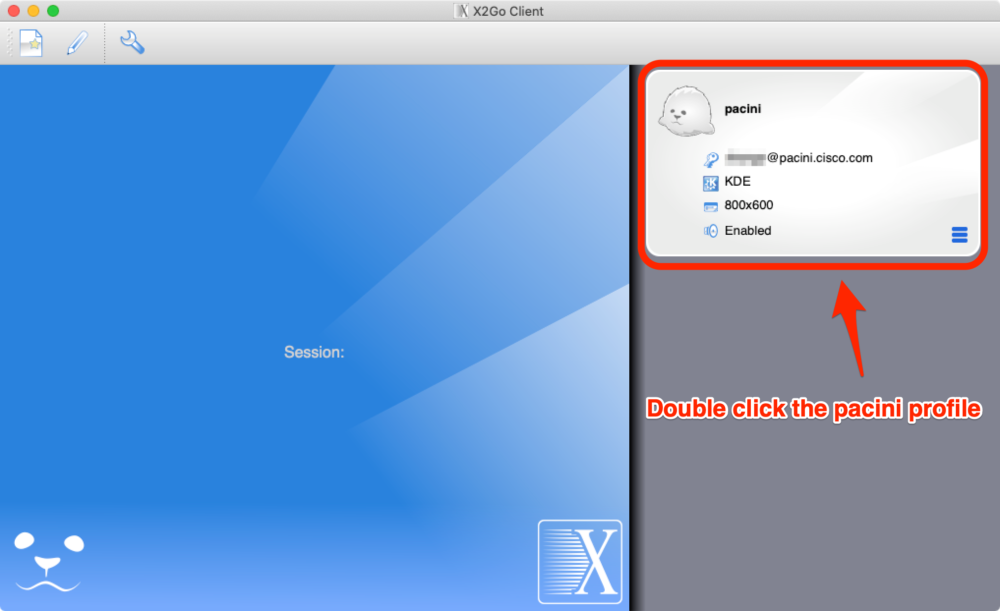
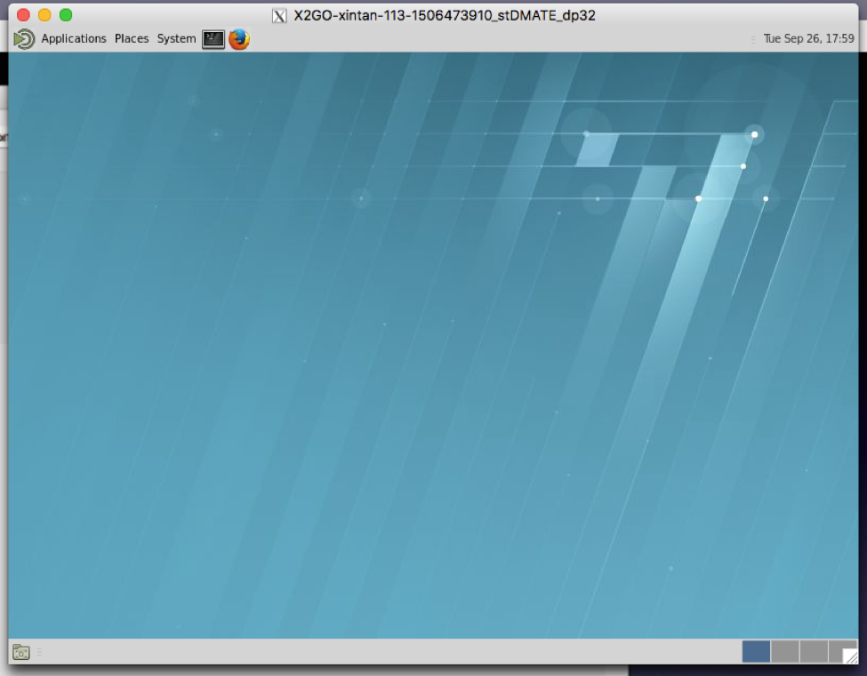

Master FAQ Index
Arcetri FAQ
- How can I obtain an Arcetri account?
- How do I use Unix/Linux/macOS to generate SSH keys?
- How do I use Windows to generate SSH keys?
- How do I login to Arcetri?
- Who do I contact if I need help with Arcetri?
- What is the meaning behind the names, Pacini, Franco and Arcetri?
- What is the difference between Pacini and Arcetri?
- What is the structure of Arcetri?
- What should I know about filesystems on pacini?
Graphical desktop FAQ
Modules FAQ
- What are modules?
- What modules are available on pacini?
- How can I load a module?
- How can I see loaded modules?
- How can I get rid of loaded modules?
- What commands can I use with modules?
- How can I use module command within a shell script?
- I need a module that is not in a list, what should I do?
SLURM FAQ
- How do I launch jobs?
- How do I monitor my jobs?
- How can I check my job's number?
- Why can’t I launch jobs on a specific node?
- What can't I ssh into a compute node?
- Why can’t I launch jobs on the head node?
- Where are the results of my job?
- What if my job is still in the queue?
- How may I cancel my job?
- What resources may I request for my job?
- How may I use SLURM commands?
- Where can I find an example of an Open MPI job run under SLURM?
- Where can I read more about SLURM?
Python FAQ
Full FAQ Follows
Arcetri
To handle your request faster please provide information about:
- Name
- Preferred account name
- Email address
- Phone number
- SSH RSA public key
For information on how to generate and/or find your SSH RSA public key, see:
Once we have created your account and notified you that it is ready, you need to call us so that we can give you your VPN password over the phone.
If you are a Unix/Linux/macOS user
1. Check for existing SSH keys
Open the terminal, and run
cd ~/.ssh
- If you see "No such file or directory", then there aren't any existing keys: go to step 2.
- Check to see if you have a key already:
ls id_*If there are existing keys, you may want to use those. Go to step 3 to send us your public SSH key
- Open a terminal on your local computer and enter the following:
- Just press Enter to accept the default location and file name. If the .ssh directory doesn't exist, the system creates one for you.
- Enter, and re-enter, a passphrase when prompted.
- You're done! Go to step 3 to send us your public SSH key
ssh-keygen -t rsa -C "your_email@example.com"
Associating the key with your email address helps you to identify the key later on.id_rsa.pub file to your account request email.WARNING: send
id_rsa.pub, not id_rsa file! id_rsa is your private confidential key, similar to your passwords!
If you are a Windows user
1. Check for existing SSH keysOpen a command prompt, and run
cd %userprofile%/.ssh
- If you see "No such file or directory", then there aren't any existing keys: go to step 2.
- Check to see if you have a key already:
dir id_*If there are existing keys, you may want to use those. Go to step 3 to send us your public SSH key
- If you don't have an existing SSH key that you wish to use, you will need to use PuTTY generarte your SSH keys.
- If you do not have PuTTY installed, you need to download and install the latest version of PuTTY
- Once you have downloaded and installed PuTTY, you need to run the
PuTTY Key Generator:
puttygen.exe -
Launch the program and click on the Load button and select your id_rsa.ppk file.

-
Enter the key's passphrase if prompted.

-
Detail's of the imported key will be displayed.

-
Go to Conversions → Export OpenSSH key from the menu.
-
Save your converted key to a new file named "id_rsa"

You can attach your id_rsa.pub file to your account request email,
or you can copy and paste the public key that you is available in:
Step 2: F. Detail's of the imported key will be displayed. (see above)
WARNING: Send id_rsa.pub, not id_rsa file!
id_rsa is your private confidential key, similar to your passwords!
- First, you should install Cisco AnyConnect
- Login with username and password we provided you: https://arcetri-asa.cisco.com
- Press "Continue"
- Wait for Java detection and press on AnyConnect VPN download link
- Open it and type arcetri-asa.cisco.com
- Press ‘Connect’ and enter your login detail
- Type in your arcetri user name and VPN password and press Enter
- Now open a terminal and enter the following command:


$ ssh pacini.cisco.comNOTE: The ssh command should NOT ask for a password, instead ssh will attempt to use your SSH private key to login to pacini.cisco.com.
NOTE: If ssh asks you for a password, it most likely means that the private ssh key on the host where ssh is running is not matched with the public ssh key that we installed when your account was created. Please contact us for help if ssh asks for a password.
Arcetri is location in Florance Italy. The Arcetri cluser named after Arcetri Astrophysical Observatory
(Osservatorio Astrofisico di Arcetri). The hosts franco and pacini are named in honor of Franco Pacini, a famous astronomer who was also the director of the Arcetri Astrophysical Observatory.
The full formal name of the Arcetri cluster is:
- Sistema condiviso in Cisco per calcoli ad alte prestazioni in onore di Franco Pacini, direttore dell'osservatorio astrofisico di Arcetri
which, translated from Italian into English reads:
- Shared system for High-Performance Computations at Cisco in honor of Franco Pacini, director of the Arcetri Astrophysical Observatory
As an astronomer, Landon Curt Noll had the honor of observing the 2004 Transit of Venus, under Franco Pacini, where Landon helped determine the distance to the Sun is 149,596,765 km ± 3543 km (0.0237% uncertainty: 1 part in 42224).

/home/
/username - mode 0700 - no other user/group access
/usr/global/
/{bin, sbin, lib, include, ...} - common software for Pacini cluster - mod by admin only/_group_name_ - writable for group for software/libs/src/{bin, sbin, lib, ...} - source for common software - mod by admin only/src/_group_name_ - writable for group for source code
/shared/
/_group_name_ - writable by group for source code
Graphical desktop
To start an graphical desktop on pacini, you need to use X2Go and connect to pacini over ssh.
OS Requirements
- macOS 10.9 or later - macOS 10.15 or later recommended
- Linux with X Windows -
Red Hat Enterprise Linux (RHEL) 7.8 or later recommended
If not RHEL7.8 then one of:- Fedora 20 or later
- CentOS 8 or later
- Windows 7 or later - Windows 10 or later recommended
Installation
- macOS only: Xquartz 2.7.11 or later - Download Xquartz for macOS
- X2Go Client 4.1.2.2 or later - Download X2Go
X2Go Client configuration
Run X2Go and setup a pacini profile as follows:

X2Go configuration steps:
- Name the session
- Enter the Host: pacini.cisco.com
- Enter your pacini username
- Check [x] Try auto login (via SSH Agent or default SSH key)
- Set the session type to KDE
- Select Media tab for next settings
X2Go Client Media settings
In addition to the above X2Go configuration, configure X2Go media as follows:

X2Go Media setting steps:
- Check [x] Enable sound support
- Check (*) esd
- Uncheck [ ] client side printing support
- Check [x] Use SSH port forwarding to tunnel ...
- Save dialog settings by clicking the ((OK)) button
macOS only suggestion: pre-launch XQuartz
While not strictly nessicary, it is helpful to have XQuartz running before you attempt to use the X2Go client. When the X2Go client makes, over ssh, a connection to pacini, it will want to start a graphical window. Pre-starting XQuartz helps avoid a connection timeout should XQuartz take too long to initialize and start.
X2Go client connection over ssh
Run the X2Go client and select the pacini profile.
NOTE: The pacini profile was created in the X2Go Client configuration step above.
NOTE: The X2Go client on macOS is called x2goclient.
Click the session card to start the session
You should see full desktop on pacini

Open a Terminal window
You may access a shell prompt via the Terminal desktop application.

For example:
To end the session
click ((Yes))

Modules
In general, modules are designed to create user's environment. For example, if you need to use CUDA with version 8.0,
you can easily load appropriate module via command module load mpi
In some cases you may wish to load a specific version of a module.
For example: module load openmpi3/3.1.3.
Without the "/version", the default recommended module will be loaded.
Depending on specific specific version is not recommended
as old versions are retired and purged from system from time to time.
You can check available modules via command module avail
The string (default) indicates that the particular module/version is the default module that is loaded if only the module name is loaded.
For example, CUDA/10.2(default) indicates that CUDA/10.2 is currenrtly the default module that is loaded if one loads just CUDA. Using just the module name without the /version is recommended to be sure you are using the best version that is available.
module add MODULE_NAME- load a modulemodule list- show loaded modulesmodule rm MODULE_NAME- unload a modulemodule purge- unload all loaded modulesmodule show MODULE_NAME- show information about a modulemodule avail- list all available modulesmodule help- give some helpful information aboutmodulecommand
The module command is a shell alias that is available from an interactive shell. The alias causes a eval to be performed at the interactive shell level that can display and/or modify shell environment variables of the interactive shell.
This shell script WILL NOT load a modules:
-
#!/bin/bash
#
# DO NOT DO THIS -- This will NOT properly load the mpi and CUDA default modules
..
module load mpi CUDA # WRONG !!!
mpirun ..
..
In shell scripts, one must explicitly eval the output of /usr/bin/modulecmd. Instead of using:
module cmd arg ..
in a shell script one must use:
eval $(/usr/bin/modulecmd bash cmd arg ..)
where bash is the name of your shell.
-
NOTE: The bash shell is the default and recommended shell.
To be sure that a shell script is using only the modules you intent to use, it is recommended that you first purge any previous modules that may have been exported.
Under certain conditions the MODULEPATH environment variable is not set.
We recommend that you source /etc/profile if that happens:
if [[ -z $MODULEPATH ]]; then source /etc/profile fi
This shell script WILL load modules:
#!/bin/bash # # How to use modules in a bash shell script .. # setup modules very early in your shell script # if [[ -z $MODULEPATH ]]; then source /etc/profile fi eval $(/usr/bin/modulecmd bash purge) # equivalent to: module purge eval $(/usr/bin/modulecmd bash load mpi CUDA) # equivalent to: module load mpi CUDA .. # then for example: mpirun .. ..
SLURM
Via batch script
- Create a .slurm file with parameters for the job
- Type in the command
$ sbatch yourfilename.slurm
To learn more about SLURM parameters see the SLURM sbatch man page.
Via interactive ssh job
$ scancel JobID
Where JobID is the unique id of your job.
For help finding you JobID, see How can I check my job's number?.
sbatch job_batch_script.msub - submit job
defined in job batch script in current directory
sbatch parameters - ask for
interactive SSH session with specified parameters
showq - show queue info about all users
sinfo - show detailed information about compute nodes
We recommend you run the Open MPI SLURM test program:
/usr/global/bin/openmpi-slurm-testWe recommend you study the SLURM job that the Open MPI SLURM test program runs by default:
- /usr/global/lib/openmpi-slurm-test/slurm-openmpi.slurm
The Open MPI SLURM test makes use of files under:
- /usr/global/lib/openmpi-slurm-test/
The source code for the Open MPI SLURM test test program is found under:
- /usr/global/src/bin/openmpi-slurm-test/
Looking at the SLURM tutorials is a good place to find more information.
Try the Open MPI SLURM test program. See the above Where can I find an example of an Open MPI job run under SLURM? FAQ for more information.
Python
$ source my_project/bin/activateWhere my_project is the environment folder.
The name of the current virtual environment will now appear on the left of the prompt (e.g.
(my_project)UserName$) to let you know that it’s active.
From now on, any package that you install using pip will be placed in the my_project folder, isolated from the global Python installation.